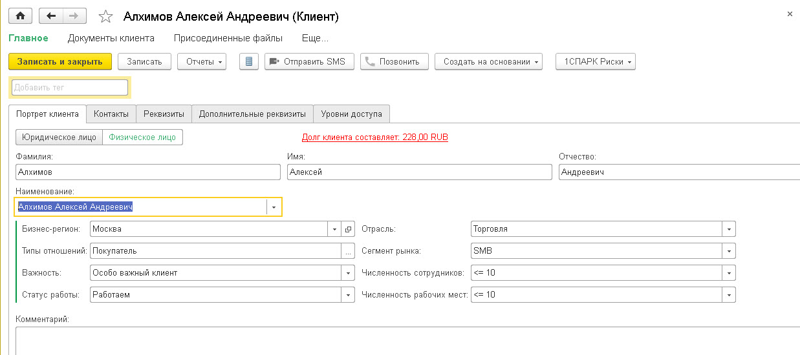
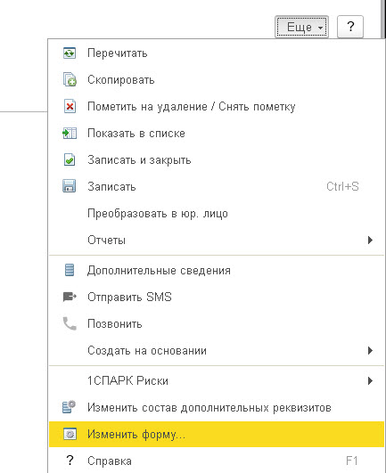
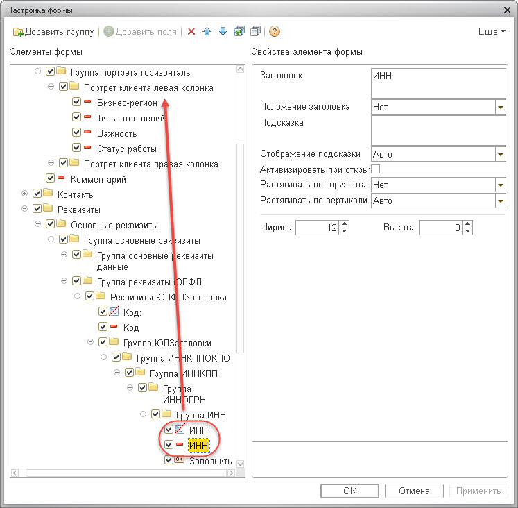
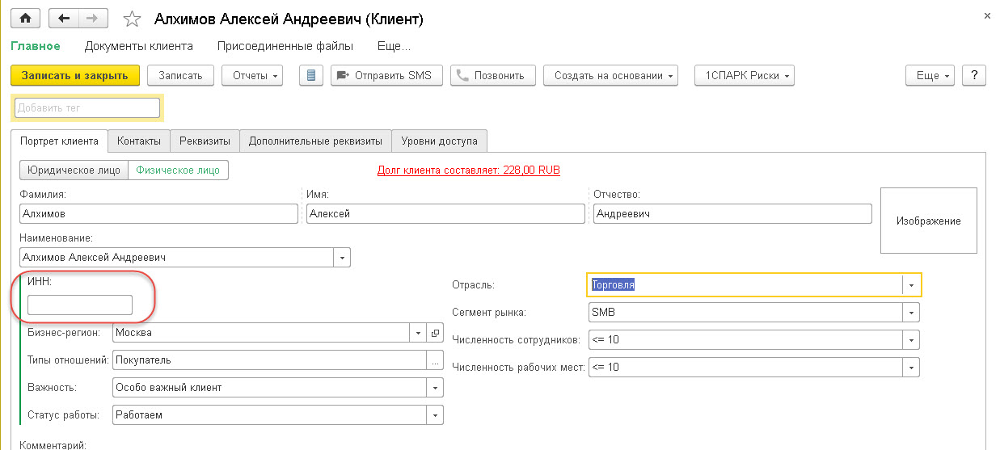
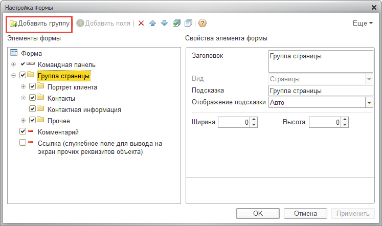
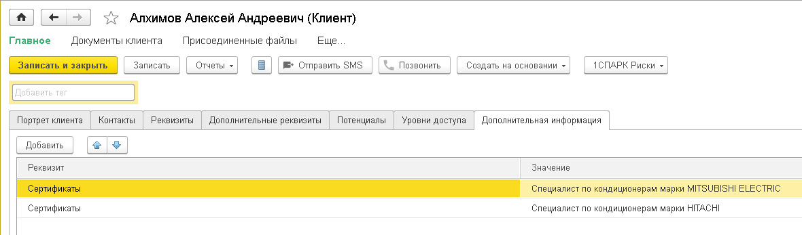
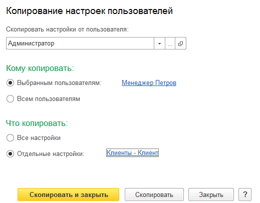
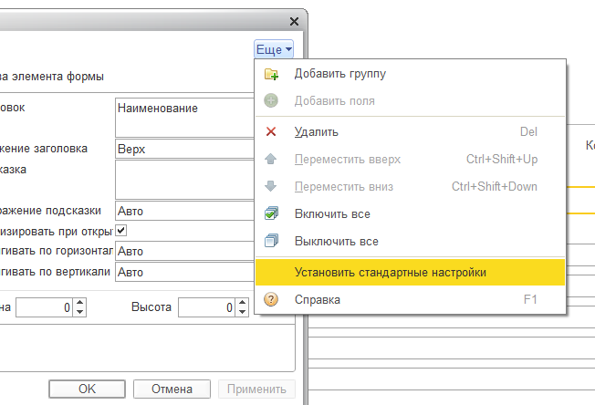

В конфигурации «1С:CRM» есть возможность изменить типовое расположение элементов на формах под нужды пользователей и применить эти настройки для других сотрудников, чтобы не выполнять одни и те же действия несколько раз. Данная конфигурация позволяют решить эту задачу без привлечения программиста.
Рассмотрим возможности настройки формы на примере карточки Клиента.
Ниже представлена типовая форма клиента:

Выполним следующие настройки формы:
Перенесем поле ИНН на закладку «Портрет клиента» над полем «Бизнес-регион»;
Создадим новую закладку и вынесем на нее Дополнительную информацию.
Перенос поля ИНН на основную закладку
Для того чтобы изменить форму, нужно в Карточке клиента зайти в меню «Ещё» и выбрать пункт «Изменить форму».

Совет: Если встать на определеное поле, то настройки формы откроются с позиционированием именно на этом элемете формы. Это упрощает поиск элементов у сложных форм.
Встанем на поле ИНН и откроем настройки формы. Нам нужно перенести мышью поле и "декорацию" «ИНН» выше поля «Бизнес-регион» в разделе «Группа страницы->Портрет клиента»:

Если поле ИНН перенеслось выше поля «Бизнес-регион», его можно опустить при помощи кнопок «Переместить вверх/вниз»:
Нажимаем «ОК» и видим, что поле ИНН перенеслось на закладку «Портрет клиента» и находится над полем «Бизнес-регион»:

Создание новой закладки
На форме возможно не только переносить элементы с одной закладки на другую, но и создавать новую закладку. Создадим для примера новую закладку и перенесем на нее дополнительную информацию с закладки «Прочее».
Открываем настройки формы, встаем на раздел «Группа страницы» и жмем кнопку «Добавить группу» - создается новая закладка (страница) панели формы. Называем ее «Дополнительная информация».

Затем со страницы «Прочее» переносим на страницу «Дополнительная информация» группу «Дополнительная информация». Завершаем редактирование формы. В результате на форме мы видим новую закладку.

Копирование настроек другим пользователям
В конфигурации «1С:CRM» также есть механизм копирования настроек форм другим пользователям. В режиме работы того пользователя, у которого настроена форма, нужно в раздел «Настройки» - «Администрирование» и выбрать команду «Настройки пользователей и прав» и далее перейти в «Копирование настроек».
Важно! Для настройки необходимо обладать правами администратора.
В открывшейся форме нужно Выбрать пользователя, которому будем копировать настройки и найти те формы, настройки которых планируется скопировать. Мы будем копировать настройки формы Клиента.
Совет: Для ускорения можно воспользоваться полем поиска, введя там слово "Клиент".
Далее выбираем нужную нам форму. Затем жмем кнопку «Скопировать и закрыть».

Теперь настройки формы скопированы пользователям и будут в дальнейшем использоваться при открытии форм любых клиентов.
|
Примечание: В любой момент пользователь может сбросить все настройки формы и вернуться к типовой форме. Для этого необходимо зайти в Настройки формы, меню "Ещё" и выбрать команду "Установить стандартные настройки". |
